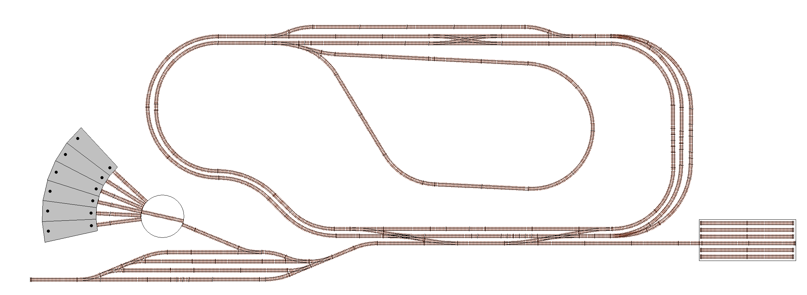

How it All Works Together


A common topic that arises in Discord conversations is the question “How does it all fit together?”
We have a great core product (EX‑CommandStation) with great features such as built-in automation (EX‑RAIL) along with many integration options (JMRI, wiThrottle, Engine Driver), support for various different integrated hardware devices (IO expanders, sensors, audio) and now even an integrated turntable controller (EX‑Turntable). However, how does one take all these bits and pieces and use them together cohesively to control and/or automate an entire layout?
This section of our website is aimed to answer just that!
Over time we will build this section out with diagrams, information, and EX-RAIL examples to demonstrate how our fictional layout can be configured, controlled, and automated with EX‑CommandStation and various other supported components and features.
We call our demonstration layout “Railway Modeller’s Fictional Trains” (or RMFT for short) as it is completely fictional, and will only exist on this website for instructional purposes. The layout isn’t designed to be an engaging, fun operations layout, rather to simply cram as many features in as possible to a relatively small layout to demonstrate the capabilities of DCC-EX and how to make use of them in the context of a complete layout.
This is the complete layout we will build up to in stages:
These are the various concepts and components we will cover:
Turnouts/points (including double turnouts)
Sensors
Signals
Virtual blocks
Reversing loops
Double and single slips
Turntables and traversers
Automated continuous running
Automated routing and switching
Building blocks and stages
We’ll present this information by starting with some core functionality, moving on to a simple loop with a single siding and station, and then proceed to add extra features and complexity a step at a time until we reach the complete layout pictured above.
At each stage, we will outline how to implement each variation of the objects in use (e.g. a servo based turnout/point, a pin based turnout/point, and a DCC controlled turnout/point) as well as outlining how the various objects can potentially interact with each other, and how to build an EX‑RAIL automation sequence to take advantage of the features.
How to read the diagrams
Our diagrams will be created in such a way that you’ll be able to click on the various items and be taken automatically to the correct page or section of the documentation that provides the software and hardware configuration of that element, along with various options depending on the supported hardware options available, and any EX-RAIL automation examples.
We will be using specific colour coded boxes and labels to identify track side buildings, sensors, signals, virtual blocks, and turnouts/points as outlined below: